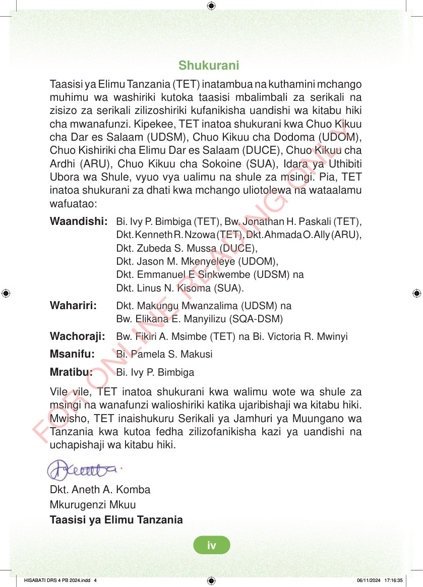

<!DOCTYPE html>
<html lang="sw-TZ"><head><meta charset="utf-8"><meta name="viewport" content="width=device-width,initial-scale=1">
<title>Hisabati: Kitabu cha Mwanafunzi Darasa la Nne</title>
<meta name="title-id" content="pg004_sec001"><meta name="page-section-id" content="4">
<link href="./content/tailwind_output.css" rel="stylesheet"><link href="./assets/libs/fontawesome/css/all.min.css" rel="stylesheet"><link href="./assets/fonts.css" rel="stylesheet">
<style>body{margin:0;background:#eef1ed}main{width:100%;display:flex;justify-content:center;padding:1rem 1rem 5rem;box-sizing:border-box}#content{width:100%;display:flex;justify-content:center}.pdf-page{position:relative;width:min(calc(100vw - 2rem),56rem);aspect-ratio:540.8980102539062/750.6610107421875;background:white;box-shadow:0 4px 24px #0002;overflow:hidden}.pdf-page img{position:absolute;inset:0;width:100%;height:100%;object-fit:fill}</style>
</head><body><main><h1 class="sr-only" id="page-heading">Ukurasa wa 4</h1><div id="content" class="opacity-0"><section role="article" data-section-type="pdf_accessible_page" data-section-id="pg004_sec001" aria-labelledby="page-heading" class="pdf-page"><p class="sr-only" data-id="pg004_gp001_tx001">Shukurani Taasisi ya Elimu Tanzania (TET) inatambua na kuthamini mchango muhimu wa washiriki kutoka taasisi mbalimbali za serikali na zisizo za serikali zilizoshiriki kufanikisha uandishi wa kitabu hiki cha mwanafunzi. Kipekee, TET inatoa shukurani kwa Chuo Kikuu cha Dar es Salaam (UDSM), Chuo Kikuu cha Dodoma (UDOM), Chuo Kishiriki cha Elimu Dar es Salaam (DUCE), Chuo Kikuu cha Ardhi (ARU), Chuo Kikuu cha Sokoine (SUA), Idara ya Uthibiti Ubora wa Shule, vyuo vya ualimu na shule za msingi. Pia, TET inatoa shukurani za dhati kwa mchango uliotolewa na wataalamu wafuatao: Waandishi: Bi. Ivy P. Bimbiga (TET), Bw. Jonathan H. Paskali (TET), Dkt. Kenneth R. Nzowa (TET), Dkt. Ahmada O. Ally (ARU), Dkt. Zubeda S. Mussa (DUCE), Dkt. Jason M. Mkenyeleye (UDOM), Dkt. Emmanuel E Sinkwembe (UDSM) na Dkt. Linus N. Kisoma (SUA). Wahariri: Dkt. Makungu Mwanzalima (UDSM) na Bw. Elikana E. Manyilizu (SQA-DSM) Wachoraji: Bw. Fikiri A. Msimbe (TET) na Bi. Victoria R. Mwinyi Msanifu: Bi. Pamela S. Makusi Mratibu: Bi. Ivy P. Bimbiga Vile vile, TET inatoa shukurani kwa walimu wote wa shule za msingi na wanafunzi walioshiriki katika ujaribishaji wa kitabu hiki. Mwisho, TET inaishukuru Serikali ya Jamhuri ya Muungano wa Tanzania kwa kutoa fedha zilizofanikisha kazi ya uandishi na uchapishaji wa kitabu hiki. Dkt. Aneth A. Komba Mkurugenzi Mkuu Taasisi ya Elimu Tanzania HISABATI DRS 4 PB 2024.indd 4 HISABATI DRS 4 PB 2024.indd 4 06/11/2024 17:16:35 06/11/2024 17:16:35</p></section></div></main><div class="relative z-50" id="interface-container"></div><div class="relative z-50" id="nav-container"></div><script src="./assets/offline-preloader.js?v=audiofix-20260824-1"></script><script src="./assets/scorm.js"></script><script src="./assets/base.bundle.local.js?v=audiofix-20260824-1"></script></body></html>